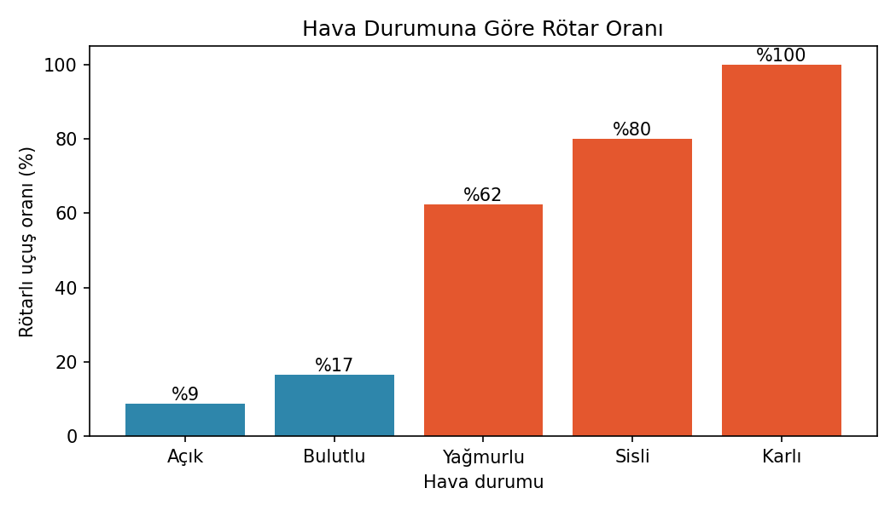
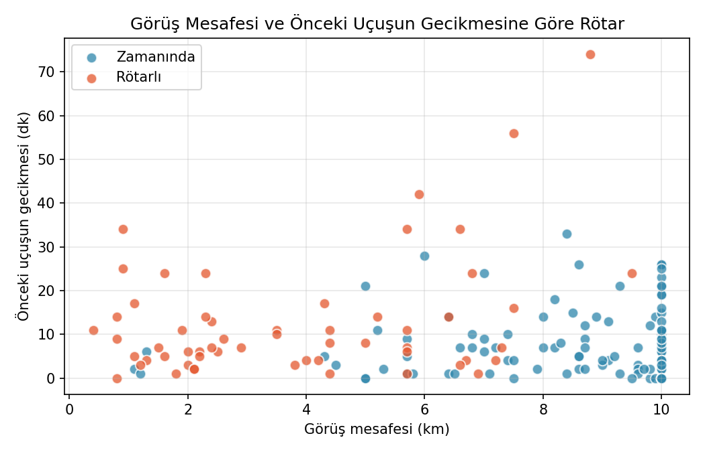
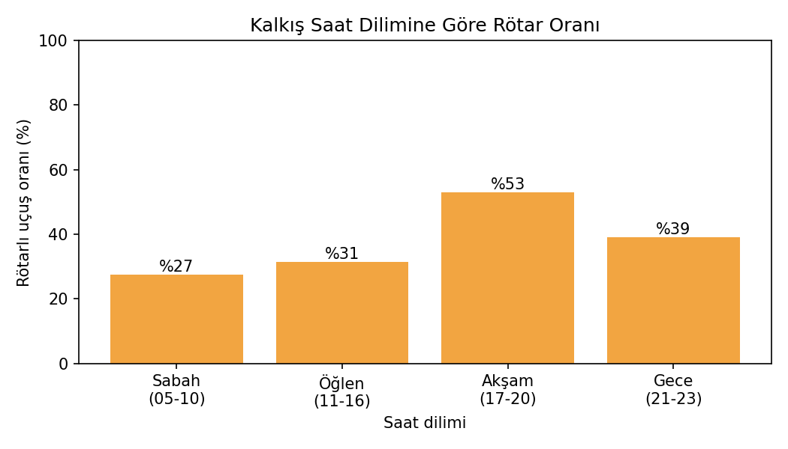
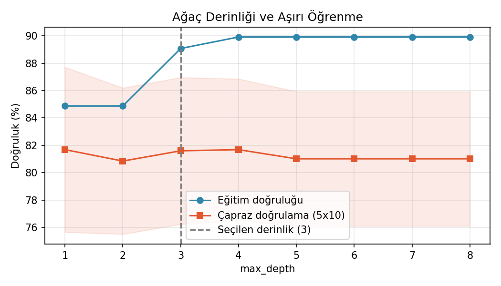
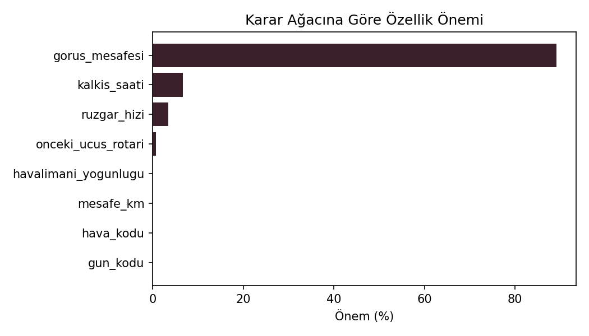
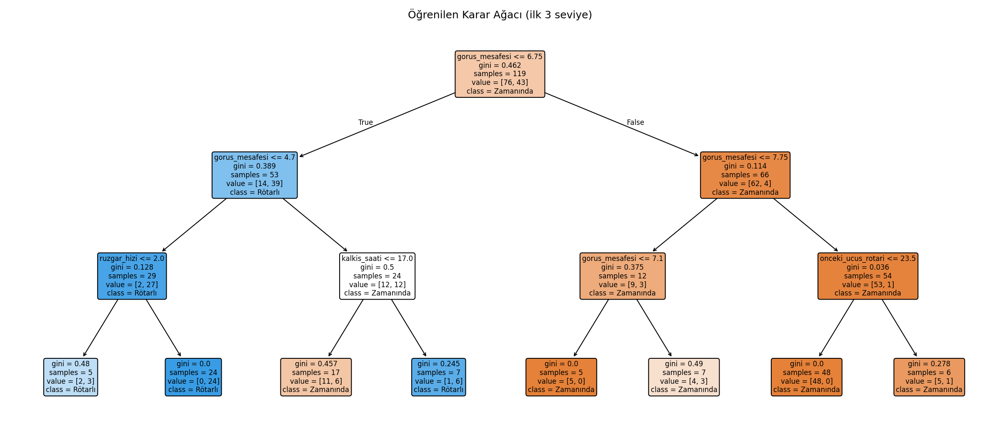

Uçuş bilgilerinden 15 dakikayı aşan rötarı tahmin eden karar ağacı modeli ve "Akıllı Rötar Asistanı" mini uygulaması
| Proje Adı | Uçtan Uca Yapay Zeka Projesi: Veriden Tahmine — Uçuş Rötar Tahmini |
| Amaç | Eğitim boyunca öğrenilen Python, veri işleme ve makine öğrenmesi becerilerini tek projede birleştirmek; havacılıktan seçilen gerçekçi bir problemde veriden yola çıkıp tahmin yapan, çalışan bir yapay zeka uygulaması geliştirmek. Analitik düşünme ve problem çözme becerilerini somut bir senaryo üzerinde geliştirmek. |
| Kapsam | Problem tanımı → veri oluşturma ve temizleme → keşif ve görselleştirme → model kurma ve eğitme → değerlendirme → mini uygulama → dokümantasyon |
| Araçlar | Python 3, Google Colab, Pandas, NumPy, Matplotlib, scikit-learn (DecisionTreeClassifier, train_test_split, cross_val_score, accuracy_score) |
| Teslim edilenler | Colab not defteri (yorumlu, çıktılı) · ucus_rotar_verisi.csv (161 satır) · 6 etiketli grafik · 5 slaytlık sunum (PPTX) · bu envanter ve 1 sayfalık proje raporu |
Yapılanlar: İlgi alanım olan havacılık seçildi. Tahmin edilebilir somut soru yazıldı, çıktı türü (sınıflandırma) belirlendi ve tahminin kime fayda sağlayacağı gerekçelendirildi.
| Problem cümlesi | Bir uçuşun kalkış saati, günü, hava durumu, rüzgâr hızı, görüş mesafesi, havalimanı yoğunluğu, önceki uçuşun gecikmesi ve mesafe bilgilerinden, uçuşun 15 dakikadan fazla rötar yapıp yapmayacağını tahmin et. |
| Hedef değişken | rotar → 1 = Rötarlı (>15 dk), 0 = Zamanında |
| Problem türü | Sınıflandırma (ikili) |
Rötarlar yolcular için kaçırılan aktarmalar ve zaman kaybı, havayolları için ise yakıt, mürettebat ve tazminat maliyeti demektir. Uçuştan saatler önce bilinebilen birkaç bilgiyle rötar riskini tahmin eden basit bir model; yolcuya erken bilgilendirme, operasyon ekibine yedek uçak/mürettebat planlama ve havalimanına kapı/pist planlama için zaman kazandırır.
Yapılanlar: Rötarı etkilediği bilinen faktörlerden yola çıkılarak Python ile 161 satırlık bir simülasyon veri seti oluşturuldu (veri_olustur.py). Gerçek bir havayolu verisi değildir ve kişisel veri içermez. Temizleme adımlarını uygulayabilmek için veriye bilinçli olarak 6 eksik değer, 1 sensör hatası ve 1 tekrar eden satır eklendi. CSV dosyası pd.read_csv ile okundu; isnull, duplicated, fillna ve dropna ile temizlendi.
| Sütun | Tip | Rol | Anlamı |
|---|---|---|---|
| ucus_no | metin | kimlik | Uçuş numarası (modelde kullanılmaz) |
| gun | kategorik | özellik (X) | Haftanın günü (Pzt–Paz) |
| kalkis_saati | sayısal | özellik (X) | Planlanan kalkış saati (5–23) |
| hava_durumu | kategorik | özellik (X) | Açık / Bulutlu / Yağmurlu / Sisli / Karlı |
| ruzgar_hizi | sayısal | özellik (X) | Rüzgâr hızı (knot) |
| gorus_mesafesi | sayısal | özellik (X) | Görüş mesafesi (km) |
| havalimani_yogunlugu | sayısal | özellik (X) | O saatteki planlı kalkış sayısı |
| onceki_ucus_rotari | sayısal | özellik (X) | Aynı uçağın önceki uçuşundaki gecikme (dk) |
| mesafe_km | sayısal | özellik (X) | Uçuş mesafesi (km) |
| rotar | kategorik | hedef (y) | 1 = Rötarlı, 0 = Zamanında |
| Tespit | Uygulanan işlem | Gerekçe |
|---|---|---|
| 1 tekrar eden satır | drop_duplicates() | Aynı uçuşun iki kez sayılması modeli yanıltır |
| 1 negatif rüzgâr değeri (−5) | NaN'a çevrildi | Fiziksel olarak imkânsız, sensör hatası |
| 4 eksik rüzgâr hızı | fillna(median) | Medyan, aykırı değerlere ortalamadan daha dayanıklı |
| 2 eksik görüş mesafesi | Aynı hava durumundaki uçuşların medyanı ile dolduruldu | Görüş, hava durumuna güçlü biçimde bağlı |
| 1 eksik hava durumu | dropna(subset=...) | Kategorik bilgiyi tahminle doldurmak yanıltıcı olur |
Sonuç: 161 → 159 satır, 0 eksik değer. Temiz veri ucus_rotar_verisi_temiz.csv olarak kaydedildi.
Yapılanlar: Veri head(), shape ve describe() ile özetlendi. value_counts ile hedef dağılımı (102 zamanında / 57 rötarlı, genel rötar oranı %35,8), groupby ile hava durumu ve hedef bazında farklar incelendi. Başlıklı ve eksen etiketli 3 keşif grafiği çizildi.
| Hava durumu | Uçuş sayısı | Rötar oranı | Ort. görüş (km) | Ort. rüzgâr (kt) |
|---|---|---|---|---|
| Karlı | 13 | %100 | 2,3 | 22,1 |
| Sisli | 15 | %80 | 1,1 | 3,5 |
| Yağmurlu | 32 | %62 | 5,2 | 19,3 |
| Bulutlu | 42 | %17 | 8,1 | 12,2 |
| Açık | 57 | %9 | 9,1 | 7,8 |



Yapılanlar: Kategorik sütunlar sayıya çevrildi; hava durumu olumsuzluk sırasına göre kodlandı (Açık=0 … Karlı=4). Özellikler (X) ve hedef (y) ayrıldı. Veri stratify ile %75 eğitim ve %25 test olarak bölündü. Ağaç derinliği test verisine bakmadan, eğitim verisinde 5×10 tekrarlı çapraz doğrulama ile seçildi; ardından model eğitildi.
# Özellik / hedef ayrımı ve bölme X = model_veri[OZELLIKLER]; y = model_veri["rotar"] X_train, X_test, y_train, y_test = train_test_split(X, y, test_size=0.25, random_state=42, stratify=y) # X_train: (119, 8) | X_test: (40, 8) | y_train: (119,) | y_test: (40,) model = DecisionTreeClassifier(max_depth=3, min_samples_leaf=5, random_state=42) model.fit(X_train, y_train) # Ağaç derinliği: 3 | Yaprak sayısı: 8
Hedef iki sınıflı olduğu için sınıflandırma modeli gerekir. DecisionTreeClassifier, "görüş 3 km'den azsa → rötar" gibi insanın okuyabildiği kurallar öğrenir. Böylece operasyon ekibine kararın nedenini açıklamak kolaylaşır. Ölçeklendirme gerektirmez ve doğrusal olmayan ilişkileri yakalar.
Çapraz doğrulama skorları tüm derinliklerde %81–82 bandında kaldı. Derin ağaçlar yalnızca eğitim verisini ezberledi. Bu yüzden en iyi CV skoruna eşit olan sığ ağaç (derinlik 3) seçildi.
X_train (119, 8) · X_test (40, 8) · y_train (119,) · y_test (40,)

Yapılanlar: Test verisinde model.predict ile tahmin yapıldı. Başarı accuracy_score ve model.score ile ölçülüp basit bir temel tahminle karşılaştırıldı. Karmaşıklık matrisi ve özellik önemleri incelendi, 4 yeni uçuş için tahmin üretildi.
| Tahmin: Zamanında | Tahmin: Rötarlı | |
|---|---|---|
| Gerçek: Zamanında | 23 ✔ | 3 ✘ |
| Gerçek: Rötarlı | 4 ✘ | 10 ✔ |
| Girdi | Tahmin |
|---|---|
| Salı 07:00, açık, 6 kt, görüş 10 km, önceki rötar 0 dk | Zamanında |
| Cuma 18:00, yağmurlu, 22 kt, görüş 4,5 km, yoğunluk 40 | Rötarlı |
| Perşembe 06:00, sisli, görüş 0,8 km, önceki rötar 25 dk | Rötarlı |
| Çarşamba 13:00, bulutlu, 11 kt, görüş 8 km | Zamanında |

class_weight="balanced" ve olasılık kalibrasyonu.
Yapılanlar: Modelin çıktısını okunur bir cümleye çeviren tahmin_et() fonksiyonu yazıldı. Risk; DÜŞÜK, ORTA veya YÜKSEK olarak sınıflandırılıp yolcuya öneri veriliyor. ucus_asistani() fonksiyonu kullanıcıdan input() ile 8 bilgi alıp anında tahmin üretiyor ve sonucu f-string ile yazdırıyor.
def tahmin_et(kalkis_saati, gun, hava_durumu, ruzgar_hizi, gorus_mesafesi,
havalimani_yogunlugu, onceki_ucus_rotari, mesafe_km):
...
olasilik = model.predict_proba(satir)[0, 1] * 100
return (f"✈ {gun} günü saat {kalkis_saati:02d}:00 kalkışlı, {hava_durumu.lower()} havadaki uçuşunuz için "
f"rötar riski %{olasilik:.0f} → {seviye}. {oneri}")
=== SkyTrack Rötar Asistanı === Kalkış saati: 19 | Gün: Paz | Hava: Karlı | Rüzgâr: 25 kt | Görüş: 2.0 km | Yoğunluk: 38 | Önceki rötar: 15 dk ✈ Paz günü saat 19:00 kalkışlı, karlı havadaki uçuşunuz için rötar riski %100 → YÜKSEK. Aktarmanız varsa havayolunuzla iletişime geçin ve alternatif planlayın. ✈ Sal günü saat 07:00 kalkışlı, açık havadaki uçuşunuz için rötar riski %0 → DÜŞÜK. Uçuşunuzun zamanında kalkması bekleniyor. İyi yolculuklar!
| Problem | Havacılıkta rötarlar yolculara ve havayollarına ciddi zaman ve maliyet kaybı yaşatır. Bu projede bir uçuşun 15 dakikayı aşan rötar yapıp yapmayacağı, uçuş öncesinde bilinebilen 8 bilgiden tahmin edildi (ikili sınıflandırma). |
| Veri | Rötarı etkilediği bilinen faktörlerle (hava durumu, rüzgâr, görüş, yoğunluk, önceki uçuş gecikmesi, saat) Python'da üretilen 161 satırlık simülasyon veri seti. Temizlik (tekrar eden satır, sensör hatası, eksik değerler) sonrasında 159 satır kaldı. Rötar oranı %35,8. |
| Yöntem | Pandas ile temizleme ve groupby/value_counts analizleri, Matplotlib ile 6 grafik. Kategorik kodlama ve %75/%25 stratified bölme. Derinliği çapraz doğrulamayla seçilen DecisionTreeClassifier (max_depth=3, min_samples_leaf=5). |
| Sonuç | Test doğruluğu %82,5 (temel tahmin %65). 14 rötarlı uçuşun 10'u yakalandı, 26 zamanında uçuşun 23'ü doğru bilindi. Modelin en önemli özelliği görüş mesafesi (%89), ardından kalkış saati (%7). Model, sonucu yolcuya anlamlı bir cümleyle bildiren etkileşimli bir asistana dönüştürüldü. |
| Çıkarım | Kötü görüş (sis, kar, yağmur) ve akşam saatlerindeki yoğunluk rötarın en güçlü habercileri. Basit ve açıklanabilir bir karar ağacı bile anlamlı bir erken uyarı sağlayabiliyor. Gerçek kullanım için gerçek uçuş ve METAR verisiyle yeniden eğitilmeli, kaçırılan rötarları azaltmak için sınıf ağırlıkları ayarlanmalı. Projeden çıkardığım en önemli ders: yüksek doğruluk tek başına yeterli değil; modelin neden karar verdiğini ve nerede hata yaptığını dürüstçe raporlamak gerekir. |
| Beklenen sonuç | Bu projedeki karşılığı |
|---|---|
| Kendi seçtiği bir problemi uçtan uca çözen, çalışan bir yapay zeka uygulaması | Uçuş rötar tahmini; veriden tahmine ve etkileşimli asistana kadar tamamlandı ✔ |
| Ham veriden anlamlı bilgiye ulaşma (temizleme, keşif, görselleştirme) | 5 tür veri sorunu temizlendi; 5 bulgu ve 6 grafik üretildi ✔ |
| Model eğitme, tahmin üretme ve başarıyı dürüstçe ölçme | Temel tahminle kıyas, çapraz doğrulama, karmaşıklık matrisi ve sınırlılık analizi ✔ |
| Teknik sonucu sade ve anlaşılır sunma | 5 slaytlık sunum ve 1 sayfalık rapor ✔ |
| Portföye eklenebilir, paylaşılabilir ilk proje | GitHub deposu ve Colab bağlantısı ile herkese açık ✔ |